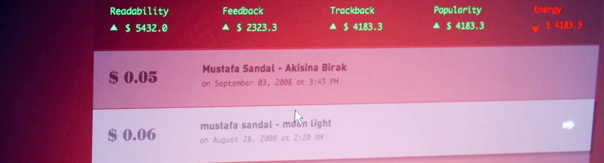

2008

Project
Value Machine is an interactive visualisation project which focuses on ‘conversations’ happening in the blogosphere and attempts to reveal the hypothetical economic values of these conversations. We produce, consume and share our knowledge with each other every day on blogs. Lately, this vast amount of exchange has begun to extend itself from the source of the information and spread out to different channels raising the question of ownership. Who does own the knowledge? Can we talk about a value system to quantify this knowledge? Can we monetise this knowledge? The aim of the project is to point out the new directions of conversations on the web and the new economy that establishes itself around these conversations.
Value Machine consists of an application interface that discovers and analyses real-time activity of user defined conversations. Calculated values are sent to the printer which then prints out the results of the analysis for each conversation. The printed receipts are aimed to give the users the idea of the value that exists in cyber space.
Commons & Economy
We live in an era where the concept of copyright is slowly dying and creative commons are taking its place. The value of copyright is also moving to the shared domain of creative commons. Instead of one person or company, the intellectual properties are now started to be owned by groups and commons. The information is now created by communities (author plus feedback community) instead of only one author. This urges the global economy to redefine itself in a different way—maybe not right now but in the near future. Value Machine aims to develop a new mentality to calculate the value of intellectual goods.
Value & Virtual Worlds
The products and goods are being valued depending on their physical conditions and qualities in real life. However, it is usually not easy to determine the fair value of a virtual property. Computing the production/consumption periods as well as the popularity of the items by considering the aspect of time might be the logical attempt to calculate these values. Value Machine questions whether there is a possible way to convert the virtual time/costs into real economical values.
Value in Time
The value is for sure uneven and depends on time. Most of the time when we quote the value of something, we talk about the recent numbers or meanings of the goods. Economical value is even more unreliable; as we know from stock markets, it may change in hours even in minutes depending on supply and demand. Such changes might happen more rapidly and totally uncontrolled in environments like web space, therefore, it is an important challenge to calculate the values of goods in real time. Value Machine aims to provide an index for these exchanges.
Exhibitions
- September 2008, LinzExhibited at Ars Electronica 2008 Campus, Art on Move.
Images


Credits & Thanks:
Mahir M. Yavuz, MFA
Ilteris Ö. Kaplan, MPS
The data is gathered from google, technorati and several blog websites. All visualizations are made with Java and Processing software.
Thanks to Travis Kirton for helping to produce our VM box.
Ilteris Ö. Kaplan & Mahir M. Yavuz © 2008
Last modified on 15 September 2008